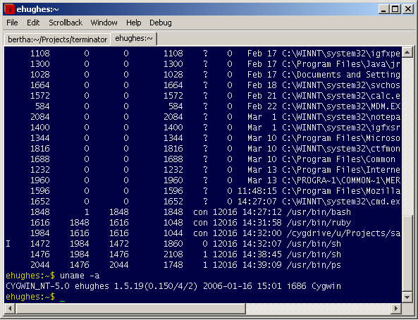

Terminator
Terminator is a GPL terminal emulator with advanced features not
yet found elsewhere. It replaces
xterm, rxvt, xwsh and friends on X11 systems,
Terminal.app on Mac OS and PuTTY on MS Windows.
Terminator will run on any modern POSIX system with Java 5 or later.
Features
Here are some of the features unique to Terminator, or which are rare amongst the competition:
Automatic Logging - Complete logs are automatically generated of all your
terminal sessions.
Drag & Drop - Text and URLs, and even files from
Finder/Nautilus/Windows Explorer can be dropped on Terminator to be inserted
as text, with automatic quoting of filenames containing shell meta-characters.
Find - Terminator provides you with a find function so you can
search for text and regular expressions within your terminal (including the scrollback),
highlighting them all, in the style of less(1), and offering quick movement to the
next or previous match. As far as we know, the only other terminal emulator with a find
function is Apple's Terminal, and ours is better.
Searches stay active until you cancel them, so if you're waiting for some particular
output in a great stream of output, this is a really great way to make it blindingly obvious
when it appears.
A screenshot of Terminator on Mac OS, after running 'man bash', and doing a find for
'(?i)shell':

Despite the evidence that a pager is running, this is Terminator doing the
highlighting — one of the authors uses cat(1) as his pager.
Freedom - Terminator is released under the GPL.
Horizontal Scrolling - Most terminal emulators wrap text when it
intrudes upon the right margin. Terminator doesn't — it instead provides a horizontal
scrollbar when necessary. This brings clear benefits in terms of readability of program
output, or text files sent to the display with cat(1). (We tried both this and Apple-like
reflowing of text when you change the window size, and we decided we preferred this. Sadly,
we don't have the resources to support two implementations, so reflowing isn't an option; it's
gone from the code.)
Multiple Tabs - Like tabbed browsing, only with terminals.

Number Reinterpretation - Terminator will recognize numbers
in a variety of bases as the current selection, and add informational menu items to the
pop-up menu showing the same number in other bases. No more man ascii or resorting
to bc(1).
Portability - Written mostly in Java, with a small POSIX C++ part (for pseudo-terminal support)
and a Ruby invocation script,
Terminator should compile out of the box on most modern desktop operating systems.
Proper Tab Character Handling - Most terminal emulators will translate
tab characters into strings of spaces, which is very annoying if you then try to copy/paste
a section of text from your terminal into a text editor. Terminator handles tabs properly,
remembering where the tabs are and copy/pasting them as tab characters.
Safe Quit - Terminator knows when you still have processes running, and brings up a dialog rather than just letting those processes die.

UTF-8 - Terminator won't mangle your favorite accented characters, and it copes well with languages such as Greek where there's a mix of normal and wide glyphs:

The text is Markus Kuhn's UTF-8-demo.txt if you want to see what a mess Terminal.app makes of it. (Terminal.app beats us on Thai, but we're better at Cyrillic, Greek, and Japanese.) The non-default settings in the screenshot were achieved thus:
terminator -xrm fontName:Monaco -xrm fontSize:13 -xrm antiAlias:true -xrm foreground:black -xrm background:white -xrm selectionColor:\#b4d5fe
One side-effect of proper support for variable-width glyphs is that you're not restricted to fixed-width fonts in Terminator, even if the only language you're using is English. GNU readline might get confused about the line length, though.
Here's a more convincingly terminal-like example of fixed-width English and variable-width Japanese; output from javac(1):

We think Terminator is the clear choice for the discerning terminal user. Though originally written
for Linux to make up for the fact that no Linux terminal emulator was as good as Mac OS' Terminal, it has
now surpassed Terminal in several areas.
Downloads
All Platforms
If no pre-built package is available for your platform, see Building from source on this page.
The Terminator ChangeLog is available separately.
Linux
For Ubuntu and other Debian-based Linux distributions, there's org.jessies.terminator.deb which will add Terminator to your GNOME applications menu. (For command-line or non-GNOME users, there's /usr/bin/terminator.)
org.jessies.terminator.rpm is less well tested.
Mac OS
For Mac OS 10.4, there's terminator.dmg which contains a universal binary application that you can simply drag and drop to install.
MS Windows
For Windows, there's a Windows installer which requires that you've already installed Cygwin, including Ruby, yourself but is otherwise complete and leaves you with a Terminator icon on your desktop. We have more information about setting up Cygwin.
(Why did we choose Cygwin? NT's built-in POSIX subsystem won't let you launch native Windows applications or interact with the network, so that wasn't an option. Cygwin, on the other hand, even contains the Unix98 pseudo-terminal support which we use to support window resizing, not to mention containing a port of one of the most widely used ssh programs.)
Running
Terminator will run fine on Mac OS, Windows, KDE, GNOME, or even an old-style X11
window manager like lwm. Now you can use the same terminal emulator everywhere!
By default, Terminator will start the shell specified by the SHELL environment variable.
You can start other programs, even in multiple tabs, from the command line — see terminator --help for the syntax.
Terminfo/Curses
Terminator has its own terminfo file. (This is regrettably necessary because of Terminator's unconventional approach to handling wide lines with a horizontal scrollbar rather than by wrapping them.)
The file will be installed in ~/.terminfo unless you used an installer that runs as root and can write to the system-wide terminfo directory (currently just the Linux installer).
If you run Terminator itself as root and the terminfo file has not been installed in the system-wide terminfo directory, it will be installed at that point.
If the terminfo file isn't available, the most common warnings you'll see are this one from programs such as less(1):
WARNING: terminal is not fully functional
- (press RETURN)
and this one, from vim(1):
E558: Terminal entry not found in terminfo
'terminator' not known. Available builtin terminals are:
builtin_riscos
builtin_amiga
builtin_beos-ansi
builtin_ansi
builtin_pcansi
builtin_win32
builtin_vt320
builtin_vt52
builtin_xterm
builtin_iris-ansi
builtin_debug
builtin_dumb
defaulting to 'ansi'
Logging in as other users/root
If the terminfo file is not installed in the system-wide location then other users (and you if you use su(1) to switch to another user) will have problems. Using sudo(1) to run a command as another user will work in many cases, because it doesn't alter $HOME by default.
For best results, on computers where you'll be logged in as root at times,
we recommend you install the terminfo file for Terminator in
/usr/share/terminfo. The easiest way to do this is to simply run
Terminator once as root. From then on, you can run Terminator as your normal
user, and use su(1) to become root.
Logging in to remote systems
You will also need to ensure that any machines you'll be remotely logging in to also have a copy of the terminfo file installed. If you share a home directory on the local and remote machine, everything will just work. Likewise if someone has already run Terminator as root on the remote machine.
(Note that if you try to run Terminator on a remote machine, it probably won't get as far as opening a window. Nonetheless, it will get far enough to set up the terminfo file. Note also that running Terminator on a remote machine as a matter of course is usually a mistake, and will be much slower than running Terminator on your local machine and simply logging in to the remote machine from within Terminator.)
If you're not able to run Terminator as root, you can simply run Terminator as yourself on the remote machine.
If you can't easily install Terminator on the remote machine, you only need to copy the terminfo file to ~/.terminfo/t/terminator (you'll need to mkdir -p ~/.terminfo/t if the directories don't already exist).
On Linux or Mac OS, and most other ncurses-based systems, this is all you need to do. If you still have problems like the ones shown at the start of this section, add the following lines to ~/.profile file on the remote machine:
export TERMINFO=~/.terminfo
export TERM=$TERM
See "Running on Windows" below for a note about Cygwin.
FreeBSD systems don't come with the necessary terminfo support installed by
default. It's apparently a snap to install the
devel/ncurses
package from the FreeBSD Ports and Packages Collection.
Pasting in VNC
If you're using an old version of VNC, you may experience problems pasting into Terminator, accompanied by the following exception:
java.awt.datatransfer.UnsupportedFlavorException: Unicode String
This is caused by a bug in old versions of the X11 VNC server. On Debian, you should remove the vncserver package and install the vnc4server package, and run vnc4server (it takes the same arguments as vncserver) — just upgrading your existing vncserver package will not help. Switching package will also a fix a bunch of other problems you may or may not have noticed with VNC.
Running on Windows
If you're having trouble starting Terminator, you may want to try running it from Bash
instead of from the desktop shortcut until you work out what's wrong.
Running it manually will use ruby.exe rather than the rubyw.exe used by the shortcut.
rubyw.exe is a version of Ruby linked with --subsystem windows instead of --subsystem console.
rubyw.exe quits with no visible error if it tries to do standard I/O.
One reason why it might do this is a world-writable directory on the PATH, as explained
here.
Any console output from the Java, as opposed to the start-up script, is recorded in a file in
~/.terminal-logs/ along with a file containing a log of each tab's output.
You may see warnings from Ruby like this:
terminator:25: warning: Insecure world writable dir /usr/local/bin, mode 040777
which can be cured thus:
chmod o-w /usr/local/bin
As of 1.5.19, Cygwin's less(1) is still using a termcap-based ncurses library.
If less(1) (and hence man(1)) say "WARNING: terminal is not fully functional", try:
infocmp -C >> ~/.termcap
If you have the JRE installed (rather than the JDK), then you may
want to rerun the JRE installer and choose a Custom installation so that you get
LucidaTypewriterRegular.ttf installed, otherwise you'll end up with Courier and being
unable to distinguish l and 1.
Building from source
There's a source distribution (terminator.tar.gz),
and you'll also need the source to the library it uses (salma-hayek.tar.gz).
The hints for building are the same for all our projects.
Authors
The original implementation and documentation was written by Phil Norman. Nearly all of the actual terminal emulation code remains unchanged.
The original idea of having a suitably hackable terminal emulator with which to experiment with advanced features came from Elliott Hughes. Not being married with children, he now takes care of most of the development.
Martin Dorey was responsible for the Cygwin port; we wrote more about Porting JNI code to Win32 with Cygwin and java.io.FileDescriptor on Win32.
Phil wrote the code that took us from nothing to a more-or-less usable replacement for rxvt on his own between 2004-04-21 and 2004-05-28. Given that he was on holiday for a week during this time, that made roughly a month of development time.
Since then, Terminator has been on the long slog towards Joel's ten years of quality.